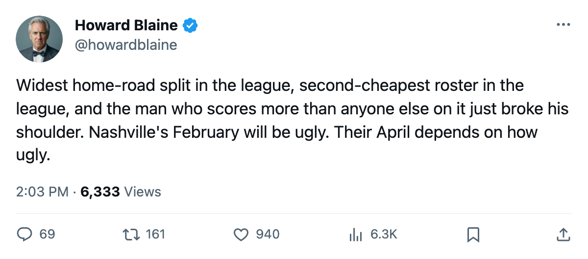
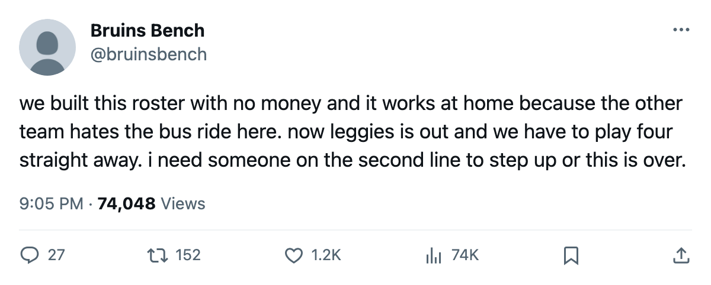

81 and 40: Nashville Has the Sharpest Home-Road Split in Hockey, Loses Its Leading Scorer, and Opens Four Straight Away
The Predators are 17-4 in their own building, 8-12 in everyone else's, and David Legwand's shoulder will not heal before February 12
 Howard BlaineSenior writer, The Blaine Rankings · The Hockey Gazette
Howard BlaineSenior writer, The Blaine Rankings · The Hockey Gazette
 Nashville Predators is 17-4 at home. The Predators are 8-12 on the road. The gap between those two win rates, 41.0 percentage points, is the widest split between home and road in a 30-club league, and the club about to play four straight games away from Nashville just lost the man who scores most of the goals that win games in Nashville.
Nashville Predators is 17-4 at home. The Predators are 8-12 on the road. The gap between those two win rates, 41.0 percentage points, is the widest split between home and road in a 30-club league, and the club about to play four straight games away from Nashville just lost the man who scores most of the goals that win games in Nashville.
 David Legwand89 has 55 points in 39 games, 28 goals and 27 assists, a pace of 116 over 82, and leads the team by 14 points. He was drafted second overall in 1998 by Nashville and has played his entire career for the Predators. His shoulder came apart sometime between January 5 and January 8. The league has the return date at February 12. The four games Nashville Predators plays before then, at
David Legwand89 has 55 points in 39 games, 28 goals and 27 assists, a pace of 116 over 82, and leads the team by 14 points. He was drafted second overall in 1998 by Nashville and has played his entire career for the Predators. His shoulder came apart sometime between January 5 and January 8. The league has the return date at February 12. The four games Nashville Predators plays before then, at  Chicago Blackhawks, at
Chicago Blackhawks, at  Vancouver Canucks, at
Vancouver Canucks, at  Calgary Flames and at
Calgary Flames and at  Edmonton Oilers, are all in buildings where the Predators have won at 40.0 percent.
Edmonton Oilers, are all in buildings where the Predators have won at 40.0 percent.
Second-cheapest roster in the league
Nashville Predators pays $51.08M in payroll, fourth-least among the 30 clubs, and has 55 points, third in the Western Conference. That is $0.93M per point, the second-best payroll value in the league behind  Pittsburgh Penguins at $0.91M and ahead of
Pittsburgh Penguins at $0.91M and ahead of  Dallas Stars at $0.94M. No team in the Western Conference turns money into standings points at a better rate. The Predators have done it with a 27-year-old goaltender in
Dallas Stars at $0.94M. No team in the Western Conference turns money into standings points at a better rate. The Predators have done it with a 27-year-old goaltender in  Tomas Vokoun91, 20 wins in 32 games at a 2.24 goals-against average, a roster built on speed, and a building where the opposing team's skaters arrive flat-footed.
Tomas Vokoun91, 20 wins in 32 games at a 2.24 goals-against average, a roster built on speed, and a building where the opposing team's skaters arrive flat-footed.
That last part matters more than the front office wants to admit in January, when the standings still look comfortable.
Nobody else is close
 Detroit Red Wings has the second-widest split in the league: 15-7 at home, 7-13 on the road, a 33.2-point gap.
Detroit Red Wings has the second-widest split in the league: 15-7 at home, 7-13 on the road, a 33.2-point gap.  Los Angeles Kings is third at 30.9. The table below shows every club whose home-road difference exceeds 10 points in either direction, plus the three clubs whose split runs the other way.
Los Angeles Kings is third at 30.9. The table below shows every club whose home-road difference exceeds 10 points in either direction, plus the three clubs whose split runs the other way.
| Club | Home | Road | Home % | Road % | Split |
|---|---|---|---|---|---|
| Nashville Predators | 17-4 | 8-12 | 81.0 | 40.0 | 41.0 |
| Detroit Red Wings | 15-7 | 7-13 | 68.2 | 35.0 | 33.2 |
| Los Angeles Kings | 10-9 | 5-18 | 52.6 | 21.7 | 30.9 |
 Buffalo Sabres Buffalo Sabres | 14-8 | 7-12 | 63.6 | 36.8 | 26.8 |
 Phoenix Coyotes Phoenix Coyotes | 11-10 | 6-16 | 52.4 | 27.3 | 25.1 |
 Mighty Ducks of Anaheim Mighty Ducks of Anaheim | 11-9 | 8-14 | 55.0 | 36.4 | 18.6 |
 New York Islanders New York Islanders | 15-9 | 8-9 | 62.5 | 47.1 | 15.4 |
| Dallas Stars | 13-6 | 15-11 | 68.4 | 57.7 | 10.7 |
 Colorado Avalanche Colorado Avalanche | 11-12 | 12-7 | 47.8 | 63.2 | -15.3 |
| Calgary Flames | 8-13 | 14-7 | 38.1 | 66.7 | -28.6 |
 Boston Bruins Boston Bruins | 8-13 | 16-5 | 38.1 | 76.2 | -38.1 |
Nashville's 41.0-point gap is the widest in the league. Detroit's 33.2 is the next entry, and no other club is above 31.
The scoring tells the story in halves
Nashville's overall numbers read like a middle-of-the-pack club: 2.83 goals for per game, 2.51 against, 55 points across 41 games. The season series shows the split in the scores themselves. In the Central Division, Nashville Predators is 3-0-0 against Detroit Red Wings and 1-1-0 against  Columbus Blue Jackets, but 0-3-1 against division-leading
Columbus Blue Jackets, but 0-3-1 against division-leading  St. Louis Blues, all three regulation losses coming by multiple goals. The Predators beat Detroit because Detroit also wins at home and loses on the road, and Nashville hosted three of the four meetings.
St. Louis Blues, all three regulation losses coming by multiple goals. The Predators beat Detroit because Detroit also wins at home and loses on the road, and Nashville hosted three of the four meetings.
Without Legwand, whose 99 speed, 95 agility and 92 dekes (all from the Book) give the Predators the only gear-changing threat on the roster, the offense becomes a possession game. At the home building, where the crowd and the travel give the forecheck an edge, that is survivable. On the road, against Vancouver Canucks and Calgary Flames and Edmonton Oilers, where the Predators already win at 40.0 percent, a possession game without a 116-pace center is a game that ends in a one-goal loss.
Nashville's last ten games read 4 wins, 3 overtime losses, 3 regulation losses. Nine of those ten games produced a goal differential of 2 or fewer. The Predators have been winning close ones at home and losing close ones away, and the margin between those two outcomes has been Legwand's ability to convert a 50-50 possession into a point.
Vokoun holds the 2.24 goals-against average on the season, and his 0.884 save percentage sits 7th among the 30 goaltenders with 5 or more games played. He has been the second-best player on a team whose best player will watch from the bench for 5 weeks. The Predators sit 8 points ahead of Calgary Flames for the eighth position in the Western Conference, and the arithmetic that built that lead ran through the building at home, where they have lost 4 games in 21 tries, and not the building on the road, where they have won 8 in 20.
The February 12 return date puts Legwand back with roughly 22 games left. At his current pace he will finish near 80 points, but the points he will not score between January 12 and February 12 are the ones that decide whether Nashville's split, which is the widest in the league, stays a curiosity or becomes the reason a 3-0 division record against Detroit turns into a 4th-place finish by April.

